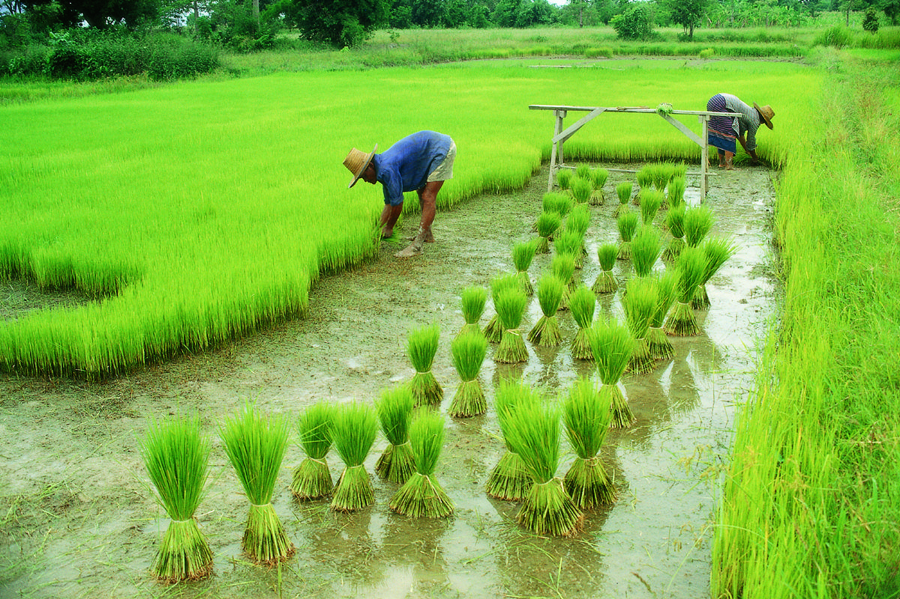

HOME
Agriculture is a vital practice that involves cultivating plants and raising animals for food, fiber, medicinal plants, and other products used by humans. It plays a crucial role in ensuring food security, supporting economies, and providing livelihoods for millions of people worldwide.
METHODS
Traditional/Subsistence Agriculture:
Relies on manual labor and traditional tools. Small-scale farming for self-sufficiency. Crops grown include staple grains, vegetables, and fruits.Intensive Agriculture:
Utilizes modern technology, machinery, and high inputs. Emphasizes maximizing yield per unit area. Includes practices like irrigation, synthetic fertilizers, and pest control.Organic Agriculture:
Focuses on sustainable practices and ecological balance. Avoids synthetic inputs such as pesticides and genetically modified organisms (GMOs). Utilizes natural fertilizers, crop rotation, and biological pest control.Precision Agriculture:
Integrates technology (e.g., GPS, sensors, drones) for precise management. Optimizes resource efficiency (water, fertilizers) and reduces environmental impact. Enables targeted treatments and data-driven decision-making.IMPORTANCE
The importance of agriculture cannot be overstated. It plays a fundamental role in society and has wide-ranging impacts on various aspects of human life. Here are some key points highlighting the importance of agriculture:
Food Security:
Agriculture is essential for providing a stable and sufficient food supply. By cultivating crops and raising livestock, agriculture ensures that people have access to nutritious food for their survival and well-being. It helps prevent hunger and malnutrition, both at the individual and societal levels.Economic Development:
Agriculture is a significant contributor to national economies. It provides employment opportunities, particularly in rural areas where farming is the primary source of livelihood for many people. Agriculture also contributes to exports and generates revenue, boosting economic growth and development.Rural Livelihoods:
Agriculture serves as a lifeline for rural communities, supporting their social and economic fabric. It provides income opportunities, improves living standards, and helps maintain vibrant rural communities. By fostering agricultural activities, governments can address rural poverty and inequality, promoting inclusive development.PESTICIDES
Pesticides used in agriculture vary depending on the target pests, crops, and farming practices. Here are some commonly used pesticides in agriculture:Insecticides:
Organophosphates: Examples include Malathion, Chlorpyrifos, and Diazinon. They target a wide range of insects by affecting their nervous systems. Pyrethroids: Common pyrethroids used in agriculture include Permethrin, Cypermethrin, and Deltamethrin. They are effective against various insect pests and have low toxicity to mammals. Neonicotinoids: Neonicotinoids such as Imidacloprid, Clothianidin, and Thiamethoxam are systemic insecticides absorbed by plants. They are effective against piercing-sucking insects like aphids and beetles.Herbicides:
Glyphosate: A widely used broad-spectrum herbicide known for its effectiveness against a broad range of weeds. It is commonly used in genetically modified herbicide-tolerant crops. Atrazine: A selective herbicide used primarily for controlling broadleaf and grassy weeds in crops such as corn and sugarcane. 2,4-D: An herbicide effective against broadleaf weeds and used in various crops like wheat, corn, and soybeans.Fungicides:
Chlorothalonil: A broad-spectrum fungicide used to control fungal diseases in various crops, including fruits, vegetables, and ornamental plants. Mancozeb: A protectant fungicide used for controlling diseases in a wide range of crops, including potatoes, tomatoes, and grapes. Azoxystrobin: A systemic fungicide effective against fungal diseases in crops like cereals, fruits, and vegetables.GALLERY
 |
|
 |
|
|  |